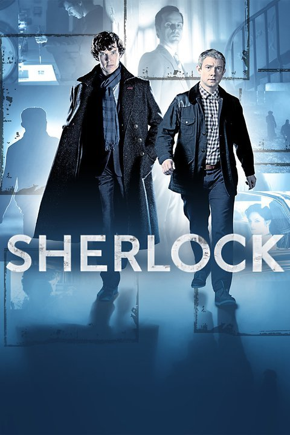

Sherlock (Aired 2010-)
Rating: 9.3/10
Age Restriction: TV-14
A modern update finds the famous sleuth and his doctor partner solving crime in 21st century London.
Creators: Mark Gatiss, Steven Moffat
Cast
Benedict Cumberbatch as .... Sherlock Holmes
Martin Freeman as .... Dr. John Watson
Una Stubbs as .... Mrs. Hudson
Rupert Graves as .... DI Lestrade
Louise Brealey as .... Molly Hooper
Mark Gatiss as .... Mycroft Holmes
Andrew Scott as .... Jim Moriarty